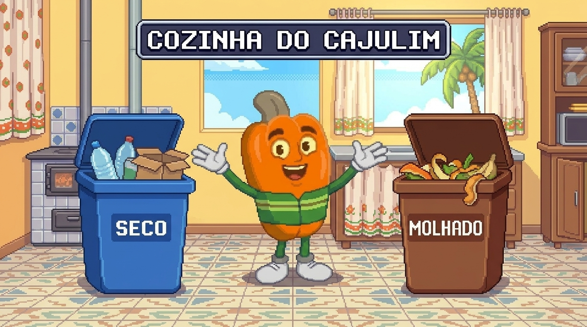
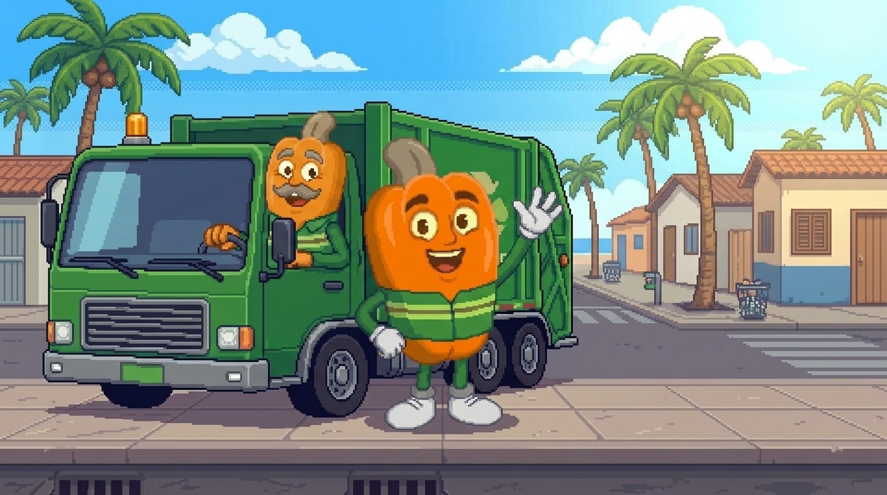
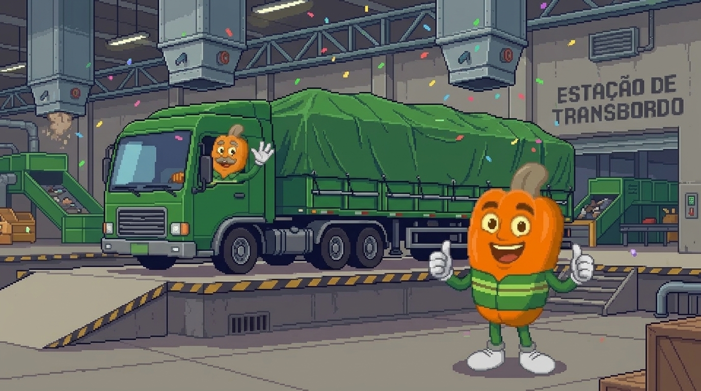
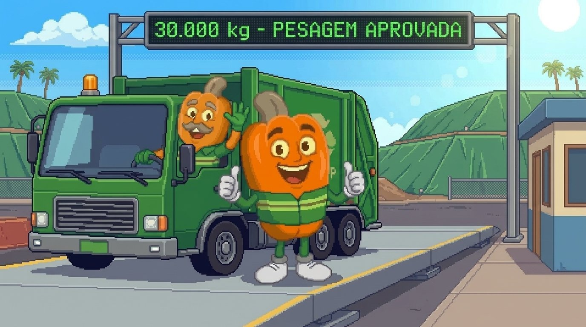
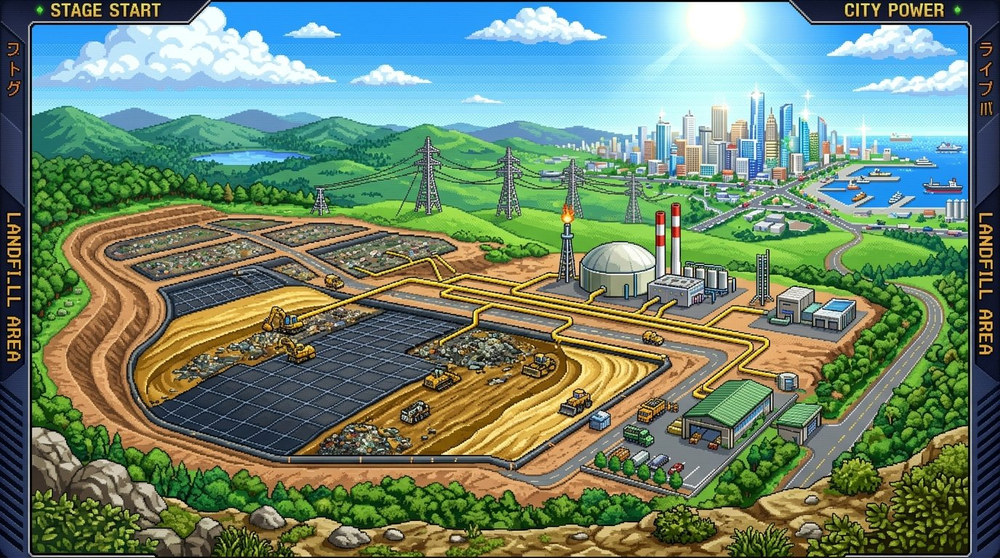

PRÓLOGO 1/2

1. Casa do Cajulim: Lixo Seco e Molhado
🎙️ Voz: Puck (Infantil 8 anos)
Contexto / Instruções de Estilo
Voz infantil masculina de 8 anos, extremamente animada, falada bem alto para fora, tom vibrante, sorridente, super alegre, zero sussurro, cheia de entusiasmo e orgulho.
Texto Falado com Tags de Emoção
cutscene_intro_step0.mp3
PRÓLOGO 2/2

2. O Caminhão da Coleta Municipal
🎙️ Voz: Puck (Infantil 8 anos)
Contexto / Instruções de Estilo
Voz infantil de 8 anos, muito energética, falando bem alto com entusiasmo, estilo herói mirim empolgado, zero sussurro.
Texto Falado com Tags de Emoção
cutscene_intro_step1.mp3
FASE 1 CONCLUÍDA

3. Pega o Lixo! Centro de Parnamirim
🎙️ Voz: Puck (Infantil 8 anos)
Contexto / Instruções de Estilo
Voz infantil eufórica, comemorando vitória de fase de videogame, alta e vibrante, zero sussurro.
Texto Falado com Tags de Emoção
cutscene_phase1_clear.mp3
FASE 2 CONCLUÍDA

4. Rota nos Bairros Residenciais
🎙️ Voz: Puck (Infantil 8 anos)
Contexto / Instruções de Estilo
Voz infantil cheia de energia, orgulho e ritmo rápido de aventura, tom bem alto e claro, zero sussurro.
Texto Falado com Tags de Emoção
cutscene_phase2_bairros.mp3
FASE 3 CONCLUÍDA

5. Rodovia e Chegada ao Transbordo
🎙️ Voz: Puck (Infantil 8 anos)
Contexto / Instruções de Estilo
Voz infantil aliviada e orgulhosa, falando com energia, estilo comemoração de piloto de corrida mirim, zero sussurro.
Texto Falado com Tags de Emoção
cutscene_phase2_clear.mp3
FASE 4 CONCLUÍDA

6. Joga na Carreta! Transferência de 30t
🎙️ Voz: Puck (Infantil 8 anos)
Contexto / Instruções de Estilo
Voz infantil impressionada com máquinas pesadas, falando alto, cheia de empolgação e dinamismo, zero sussurro.
Texto Falado com Tags de Emoção
cutscene_phase3_clear.mp3
FASE 5 CONCLUÍDA

7. Balança Oficial do Aterro: 30.000 kg
🎙️ Voz: Puck (Infantil 8 anos)
Contexto / Instruções de Estilo
Voz infantil triunfante, tom bem alto e orgulhoso, comemorando aprovação técnica na balança, zero sussurro.
Texto Falado com Tags de Emoção
cutscene_phase4_clear.mp3
FASE 6 CONCLUÍDA

8. Aterro Tecnológico: Biogás e 10.0 MW
🎙️ Voz: Puck (Infantil 8 anos)
Contexto / Instruções de Estilo
Voz infantil fascinada pela ciência ambiental, tom explicativo alegre e muito animado, zero sussurro.
Texto Falado com Tags de Emoção
cutscene_phase5_step0.mp3
FASE 7 CHEFÃO

9. Chefão: Barão do Entulho Clandestino
😈 Voz: Fenrir (Vilão Teatral)
Contexto / Instruções de Estilo
Voz masculina de vilão de desenho animado clássico, rouca, teatral, zombeteira, gargalhando bem alto, sotaque sarcástico, zero sussurro.
Texto Falado com Tags de Emoção
cutscene_phase5_step1.mp3
EPÍLOGO 1/2

10. A Redenção: 300 Horas de Caçamba Legal
🎙️ Voz: Puck / Fenrir
Contexto / Instruções de Estilo
Voz infantil alegre e orgulhosa (Cajulim) seguida de resposta sincera, redimida e amigável (Barão), zero sussurro.
Texto Falado com Tags de Emoção
cutscene_ending_step0.mp3
EPÍLOGO 2/2

11. A Grande Vitória da Sustentabilidade
🎙️ Voz: Puck (Infantil 8 anos)
Contexto / Instruções de Estilo
Voz infantil transbordando pura euforia e vitória, gritando de felicidade, comemorando o troféu máximo, zero sussurro.
Texto Falado com Tags de Emoção
cutscene_ending_step1.mp3